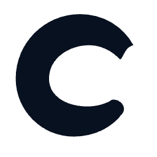
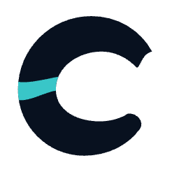
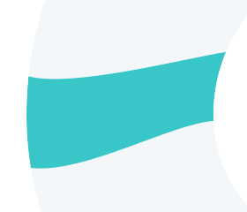
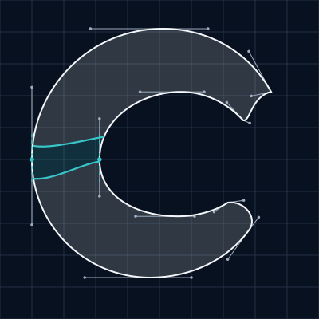

Optical refinement A2
Refined confluence
The same silhouette, with a slightly smaller overlap and curved seams that rise naturally through the spine.
Pure white


36px mark box · Inter 600 / 425
Cool white + aqua

36px mark box · Inter 600 / 425
Pure navy



36px mark box · Inter 600 / 425
Navy + aqua


36px mark box · Inter 600 / 425
Favicon in context
Browser-tab previews · native 16px favicons
Covan Labs
These are tab-surface previews. Test pages load the real 16px favicon; browser chrome follows your browser’s own theme.
Confluence and terminal detail
The same silhouette, with a slightly smaller overlap and curved seams that rise naturally through the spine. The final contour and the overlap are both drawn from the selected A source geometry.


Construction curves

Pure black


Download source files
- white: mark SVG · lockup SVG · 256px PNG
- navy: mark SVG · lockup SVG · 256px PNG
- black: mark SVG · lockup SVG · 256px PNG
- primary: mark SVG · lockup SVG · 256px PNG
- light: mark SVG · lockup SVG · 256px PNG